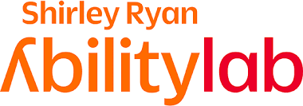
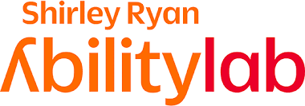

My name is Vijeth. I believe engineering is most meaningful when applied toward
human dignity, quality of life, and the well-being of all living beings.
Towards that end, I build systems that take on tasks some of us
cannot do — perhaps due to physical impairment —
and some tasks we should not do.
My work spans bionics and prosthetics, robotic control, and Physical AI, with
experience across sensing, simulation, embedded hardware design, and machine learning.
I have also worked in movement science and gait analysis, and I am currently
focused on automating contact-rich real-world tasks, such as washroom cleaning.
Built contact-rich manipulation demos on an Aubo 6-DoF arm for real-world cleaning tasks.
Implemented position-control primitives using task-specific, user-defined coordinate frames
to execute stable wiping and scrubbing motions under contact.
Date: 2024
Skills: ROS 2, MoveIt, Position Control, etc.
Markerless Kinematics
IMU MoCAP
Built a low-cost markerless gait pipeline using IMUs as an alternative to lab-grade marker-based systems (e.g., Vicon).
Processed and filtered IMU signals and ran OpenSim inverse kinematics to estimate lower-limb kinematics for gait analysis.
Date: 2024
Skills: OpenSim, IK, Filtering, IMU Signal conditioning.
Symbionic
Myoelectric Control
Led electronics development for an EMG-based myoelectric control stack for upper-limb systems.
Designed PCBs and power architecture and delivered embedded firmware to acquire, condition, and stream EMG reliably.
Date: 2024
Skills: PCB design, NRF, C++
Simulations
Control
Built simulation pipelines for mobile manipulation tasks using ROS, MoveIt, and Gazebo.
Modeled kinematics, planning, and execution for contact-heavy cleaning tasks prior to real-world deployment.
Date: 2024
Skills: ROS, MoveIt, Blender, Inverse Kinematics, Planning, C++
Coordinated Movement Control
A Data-driven Approach for Prosthetic Control
Lower limb amputation can be a huge impediment, not just for ones’s mobility, but overall well-being. Prostheses alleviate the challenges but controlling a robotic limb in a intuitive way can be a challenge in its own. Current powered legs are mostly well suited for simple rhythmic tasks like flatground walking.
Coordinated Movement is a new data-driven paradigm using whole-body coordination and examples of real-world movements for prosthesis control. It can very easiy handle complex and non-rhythmic real-world movements (like obstacle crossing). It is also a continuous control without explicit & awkward transition mechanisms to switch from one type of movement to another.
Powered limbs are better, lighter and more capable than ever. But with great powers comes great need for controllablility. In absence of good control, users still prefer passive limbs for their simplicity. Passive limbs are ill-equpped to handle complex terrains, induces an asymmetric gait resulting in stress to hip and back joints.
Implemented and evaluated real-time controllers on the Open Source Leg platform to enable learning-based prosthetic control.
Learned mappings from full-body kinematics to prosthetic reference trajectories, enabling smooth, continuous control of non-rhythmic movements without explicit mode switching.
Integrated live kinematic inputs with a neural network–based policy to generate reference trajectories for powered knee actuation.
Low level control was tuned using PID.
Date:
Skills: PID control, mechatronics, PyTorch
Miscellaneous
A few other tinkerings
Remote office in Olympic National Park
A pandemic is the best time to run into the woods. But what must one do when one has a thesis to write.
One of my proudest achievements as an engineer was to be able to build a off-grid setup with marine deep cycle battery and full sine wave inverter. I rigged this up during the pandemic lockdown to be able to explore the Olympic Nat’l Park and complete my thesis. My favorite office space ever!
Undergrad Engineering Racing and Design Challenges at Indian Institute of Technology (IIT) TechFest
Objective: To build miniature racing beasts
Our team of four built a 3hull - Airboat (1:15 scale model) designed primarily for speed, powered by a 3.2cc engine. We won the Best Design and 3rd place in the race.
Also, built a miniature four wheel drive car (a 1:8 scale model) for IIT. The vehicle was powered by a 3cc engine and radio controlled. We placed 2nd National level.
Downhill Prosthesis CU Boulder 01/2011 – 12/2011
Advised by Prof Rodger Kram at University of Colorado at Boulder, I conducted independent research to develop prototype prosthesis using discarded skiis and dampers. Carbon fiber ski’s for elasticity and dampers for heat dissipation during down-hill travel.
I wish I could find a picture of this contraption.
“Mario-Cart” Competition (Mechatronics Course Project) CU Boulder
Objective: to build robotic Mario carts from ground up. Compete to spot and shoot rival team’s cart.
Designed PCBS for IR sensors, signal conditioning, power-supply and interfacing components with sbRio. Programmed sbRio in LabView.
We crashed and burned :(.
Skills: EAGLE PCB Design, sbRio, LabView
MultiRobot Surveillance Algortihm - Grad Class Project
Goal was to implement most efficient area coverage and intruder detection.
Implemented an algorithm to compute the amount of “stocastic” vs “planned” exploration polciy needed to optimally surveill an area. E.Coli based gradient seeking was used for “planned” exploration.
Skills: Matlab OOPs
Visual Localization for Prosthesis Control
Spatial awareness for better control.
One of challenges of prosthesis control is knowing the right movement type for any given time. Human use vision for navigating everyday environments.
We developed an applicaton built on Google’s Project Tango hardware platform which used visual features to estimate location in a known environment (SLAM). Location estimates and motion is used for estimating right movement or prosthetic locomotion mode.
Date: January 2017 - Mar 2019
Skills: Machine Learning(LDA,SVM) , Android, ROS, Google Tango, MATLAB
Myoelectric Control of Prosthetic Limbs
Protheses can vastly improve quality of life for people with amputation. A big challenge in prosthetic control, however, is conveying the user intent - connecting the mind and the machine.
Center of Bionic Medicine, under Dr Todd Kuiken, pioneered myo-electric control of prosthetic limbs. Using muscle signals as the interface, the next generation prostheses are directly controlled by the user. As a research engineer, I conceptualized and designed controllers, EMG acquisition systems; provided hardware support to prosthetists and researchers for OttoBock Hand, BiOMAnkle, VanderbiltLeg.
People with motor impairments are often unable to operate the assistive devices that could improve their quality of life. Robotics and machine learning can offer a chance to share the burden.
As a research engineer at Argall Lab at Rehabiliation Institute of Chicago (now Shirley Ryan Ability Lab), I supported software and hardware development of semi-autonomous assistive devices - JACO assistive robotic arms and smart wheelchair.
One must’nt get an engineering degree without atleast a single project paying tribute to the Force!! Blasphemy !!
For a Real Time Operating Sys class project, our team built a Robotic Sentinel Arm. Equipped with a sword and vision, 6 DOF crust-crawler arm to intercept and block the attack.
Date: 2011
Skills: RTOS, OpenCV
Self Assembly of Modular Robots
Replicators (European Commission FP7)
The REPLICATOR project, funded by the European Commission, focuses on the development of an advanced robotic system, consisting of a super-large-scale swarm of small autonomous mobile micro-robots that are capable of self-assembling into large artificial organisms. They will be used to build autonomous sensor networks, capable of self-spreading and self-maintaining in open-ended and hazardous environments.
Role
As a research intern at Almende B.V, in collaboration with 9 other universities across European Union, I investigated decentralized algorithms for assembling and metamorphosizing modular robots. Using Graph Grammar I was able to successfully assemble linear structures like snakes and complex organisms like a hexapod without any human intervention.
Imagine walking the world, with a blindfold. Thats how current prostheses navigate.
As part of my doctoral thesis, using an ego-centric camera, I showed that vision can provide crucial information about the current environment to deduce the right prosthetic movements. More interstingly, the results showed that vision sensor is able
detects changes in environment prior to kinematics or EMG based sensors. This early detection can be used to cue smooth and safe control transitions in powered limbs.
A limitation of results from vision based research is lack of generalizability. High accuracies are obtained in restricted lab settings or small enviroments. Knowledge ‘learned’ from other bigger datasets can be transferred and utilized to improve generalizability and accelerate deployment of vision sensors in prostheses. To offset my limited dataset, I used Transfer Learning technique to leverage the features learned from ImageNet dataset (1 million images) and showed improved accuracies as well.
Mode-Free Control of Prosthetic Lower Limbs
IEEE International Symposium on Medical Robotics (ISMR), 2019
Unified prosthetic control method independent of gait mode classification.
Espérance Creations is a vehicle for my hopeful fantastical dream, of creating a better world through technology and engineering. Espérance pour un monde meilleur.


 
